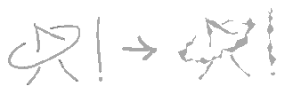
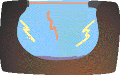

Make your own Holo-projector Make your own Holo-projector
You've read about 'em, you've heard about 'em, but have you seen one? More important, have you owned one? Well, by the end of today you could be the happy owner of a working hologram projector!
One day, walking home from town, I went past a large container (the kind that they keep to throw away nice gadgets in). I opened one of the doors and lo! what did I see but an overhead machine? I opened it and took out the lens. The lens is of the strange flat type which simulates a fat fat one, this is done by cutting out the material within the lens in such a way that what's left is a flat saw-toothed surface wich simulates the surface of the real lens. This makes the image look really high-tech and futuristic:

I left the machine itself and wandered away happily, looking at everything through my plastic lens. Then I discovered that since it simulates a lens that's round, but is flat, it makes a hologram of a ball, with the stuff behind the lens wrapped around it's virtual surface.. It's kind of like the KPT glass lens but in real 3-D. The lens, if it's looked though from the other side, gives the opposite effect: the holo is bulged into the lens, like the photoshop "pinch" effect. So I walked home looking at the people I met on the way through my lens... Or maybe it was mostly them seeing a giant round holo of my nose when they looked at me, this have rise to some distress among the more non-prankish of them(I used the "pinch" mode, them, being on the other side used the glass lens effect). While I walked I planned a thousand things to do with the lens, scrapped some and finally chose this project:
Take the overhead machine and redesign it like this:

COLOR GUIDE:
the inside of the projector
light from hidden light source
lens, and a ray of light.
the image you wish to turn 3DGENERAL OUTLINE:
Remove the external mirror and the piece of tube that connect it to the rest of the oh machine, then open and remove the milkwhite plastic panel from under the lens, play around with the lens, turn it upside down, remove most of the machine's intestines, send them to SRL, put some lightbulbs along the inner upper corner of the box, put your soon-to-be 3D pic on the bottom of the box, close , switch on the lights and grok.The lens could be used for several other non-intended purpouses:
giving real depth to Doom or Quake
to make a 'tripper trap', fasten it in front of a wall lamp, or if you're evil enough: a lava lamp
experience the net in 3D - put it in front of the screen
combine it with an aquarium
glue it in front of unused TV-set and watch your TV-addicted friends flip when they want to watch their fav game show
Seize a non-guarded overhead and open the machine and turn the lens around, the next person to use the machine will probably go bananas when the spreadsheet is projected all over the room...
Joel Westerberg